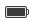

Uporabljanje programov in nastavitev z meniji kazalnikov
Ubuntu ima na desni strani pulta menije kazalnikov. V menijih kazalnikov lahko preverite in spreminjate stanje svojega računalnika in programov. Nekatri meniji indikatorjev, ki jih boste videli, so:
-
Meni sporočanja

Enostaven zagon in prejemanje dohodnih sporočil od programov sporočanja vključno z e-pošto, družabnimi omrežji in internetnim klepetom.
-
Meni baterije 
Preverite stanje polnjenja vaše baterije. Ta meni je skrit in ni prikazan, če ni zaznane baterije.
-
Meni Bluetooth-a

Prejmite ali pošljite datoteke preko Bluetooth-a. Ta meni je pokazan le, če je zaznana podprta naprava Bluetooth.
-
Meni omrežja
Poezava z žičnimi, brezžičnimi, mobilnimi in VPN omrežji.
-
Meni zvoka
Nastavite glasnost, nastavite nastavitve zvoka, in nadzirajte predvajalnike predstavnosti kot je Banshee.
-
Ura
Dostopaj do trenutnega časa in datuma.
-
Meni uporabnika
Spremenite vaše geslo, nastavitve jezika ali prijavno sliko. Hitro preklapljajte med uporabniškimi računi brez odjavljanja.
-
Meni Sistem

Dostopajte do nastavitev sistema. Zaklenite zaslon, odjavite se, postavite sistem v pripravljenost, ponovno zaženite ali ugasnite vaš računalnik.
Nekatere ikone v menijih kazalnika se spremenijo glede na stanje programa.
Menija kazalnika lahko v pult dodajo tudi drugi programi kot sta Tomboy ali Transmission.
Več podrobnosti
- Namizni vodnik Ubuntu — Namizni vodnik Ubuntu
Pogjejte tudi
- Pokaži meni splošnega dostopa — Meni splošnega dostopa je ikona v vrhnji vrstici, ki je videti kot oseba.